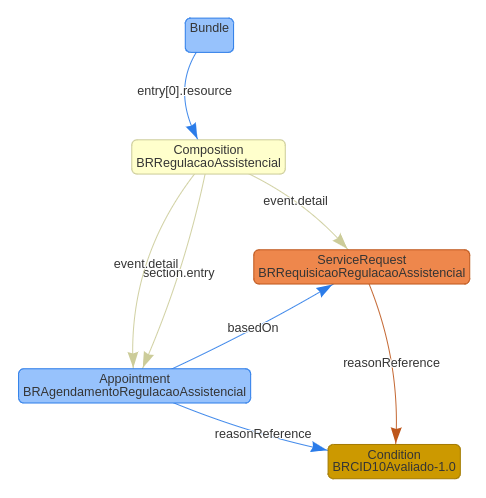
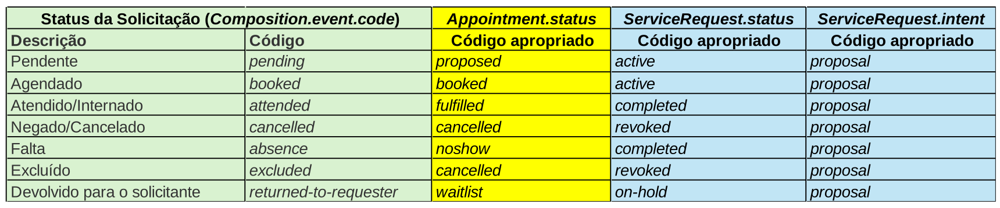

Guia de Implementação da Regulação Assistencial (RIRA) da RNDS
1.0.0 - STU1

Guia de Implementação da Regulação Assistencial (RIRA) da RNDS
1.0.0 - STU1

!!Guia de Implementação da Regulação Assistencial (RIRA) da RNDS - Compilação de desenvolvimento local (v1.0.0) construída pelas ferramentas de compilação FHIR (HL7® FHIR® Standard). Veja o Diretório de versões publicadas
| Page standards status: Informative |
Para a modelagem do modelo computacionais do Registro de Informação de Regulação Assistencial (RIRA), foram mapeados os campos do Modelo de Informação (MI) aos recursos do FHIR R4. Assim, foi realizada a modelagem fechada dos perfis de modo a atender o contexto nacional.
Foi criado um Projeto Rede Nacional de Dados em Saúde, na plataforma SIMPLIFIER.NET, para a publicação e distribuição dos perfis relacionados aos documentos computacionais em produção na rede.
O diagrama abaixo apresenta o pacote Bundle no qual é condensado o RIRA, referenciando todos os dados relevantes para caracterizar uma regulação assistencial.

O modelo computacional do RIRA é definido pelo perfil Regulação Assistencial (RIRA) [Composition] e
os
demais Recursos FHIR apresentados abaixo.
| Resource | Profile |
|---|---|
| Composition |
BRRegulacaoAssistencial
|
| Appointment |
BRAgendamentoRegulacaoAssistencial
|
| ServiceRequest |
BRRequisicaoRegulacaoAssistencial
|
| Condition |
BRCID10Avaliado-1.0
|
Perfis dos tipos ValueSet e CodeSystem estão associados a recursos terminológicos. No contexto de regulação assistencial e os domínios utilizados, foram criados CodeSystems específicos definidos pelo Comitê Gestor de Saúde Digital (CGSD).
Vale destacar que os perfis terminológicos podem passar por atualizações e versionamentos com periodicidade específica de cada domínio, por isso é importante acompanhar a disponibilização dessas atualizações no projeto RNDS no Simplifier.
Note que na estrutura dos perfis há elementos com bindings para ValueSets que apontam
para CodeSystems. Já no JSON (Bundle), o elemento “system” sempre
indicará os CodeSystems relacionados aos códigos (“value”) indicados pelo
integrador (autor do registro).
Abaixo é apresentado uma relação dos Status possíveis no MC do RIRA.
